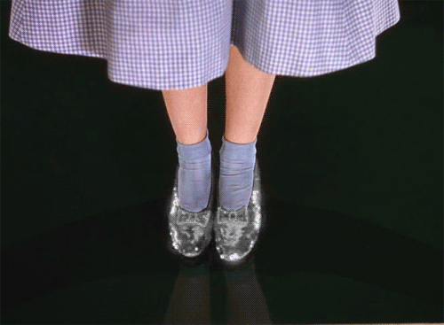

Silver Slippers
Dorothy's ruby red slippers were originally silver.
In L. Frank Baum's The Wonderful Wizard of Oz books, which are the original Oz stories, Dorothy's slippers are silver in color. They turned red and became the most iconic shoes of the century by the time they slipped onto Dorothy's feet in the 1939 film.

Follow The Yellow Brick Road